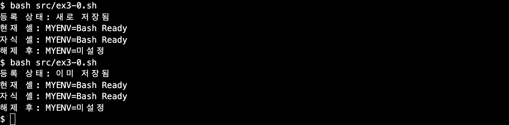
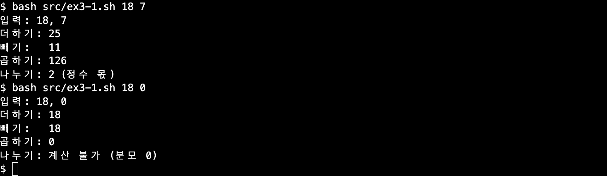
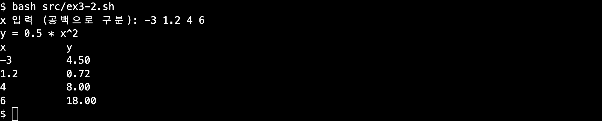
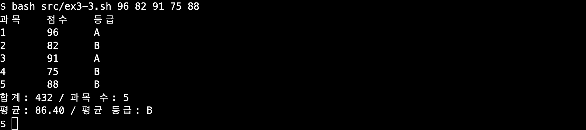
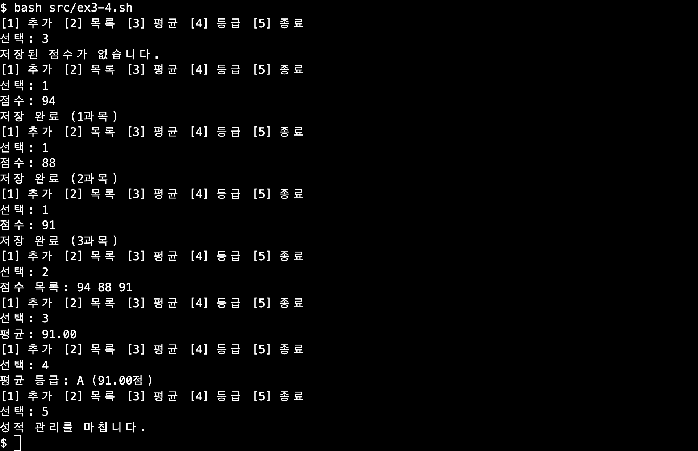
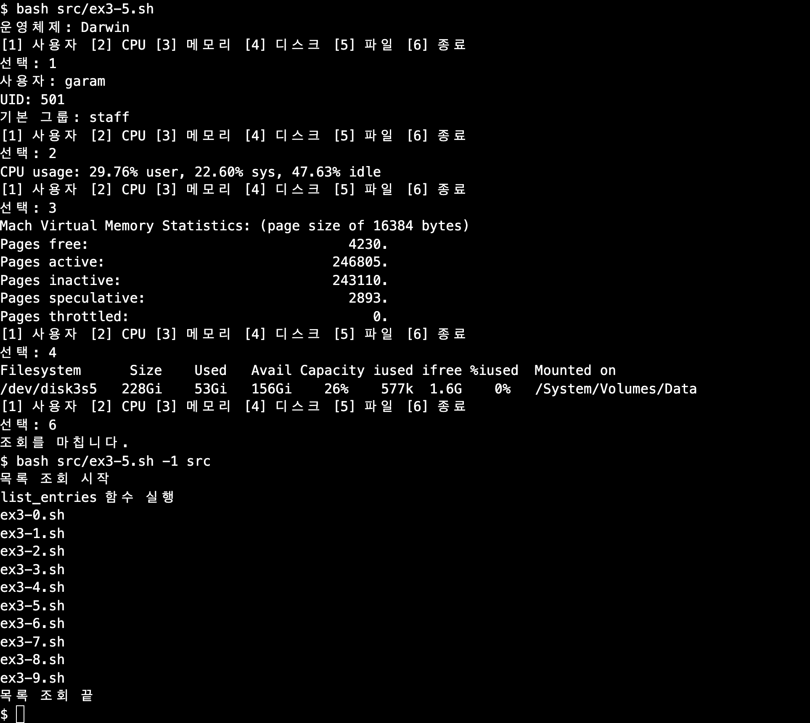
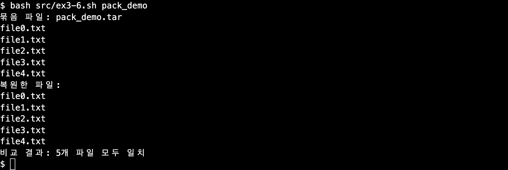
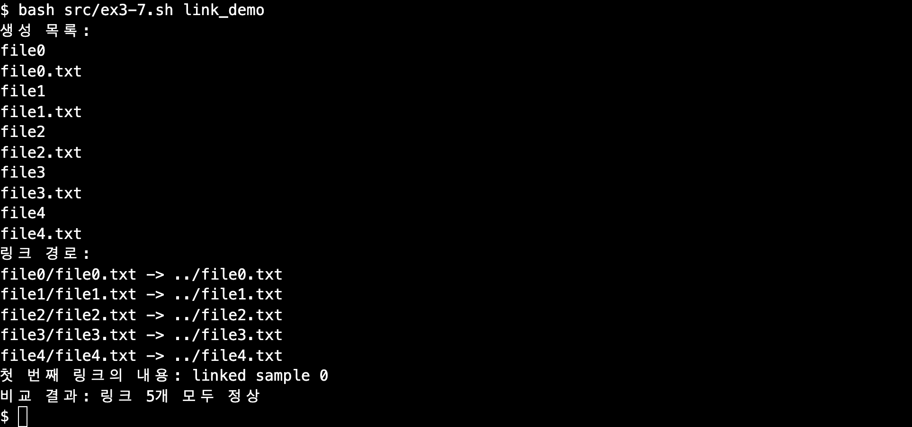
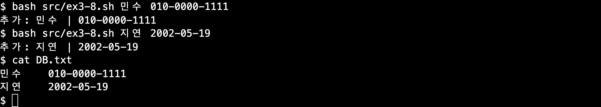
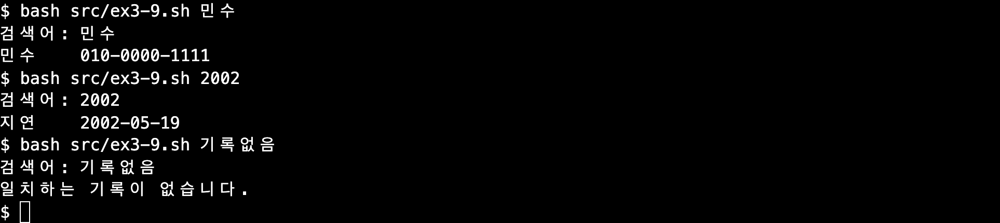

20261667 김가람

#!/bin/bash
if [ "$#" -gt 1 ]; then
echo "사용법: $0 [설정 파일]" >&2
exit 1
fi
config=${1:-./.bashrc}
setting='export MYENV="Bash Ready"'
touch "$config" || exit 1
if grep -Fxq "$setting" "$config"; then
echo "등록 상태: 이미 저장됨"
else
printf '%s\n' "$setting" >> "$config" || exit 1
echo "등록 상태: 새로 저장됨"
fi
source "$config" || exit 1
printf '현재 셸: MYENV=%s\n' "$MYENV"
bash -c 'printf "자식 셸: MYENV=%s\n" "$MYENV"'
unset MYENV
printf '해제 후: MYENV=%s\n' "${MYENV-미설정}"

#!/bin/bash
if [ "$#" -ne 2 ]; then
echo "사용법: $0 <정수> <정수>" >&2
exit 1
fi
for number in "$@"; do
if ! [[ $number =~ ^-?[0-9]{1,9}$ ]]; then
echo "입력 오류: 부호를 제외한 9자리 이하 정수만 가능합니다." >&2
exit 1
fi
done
decimal() {
case "$1" in
-*) echo "$((-10#${1#-}))" ;;
*) echo "$((10#$1))" ;;
esac
}
left=$(decimal "$1")
right=$(decimal "$2")
printf '입력: %d, %d\n' "$left" "$right"
printf '더하기: %d\n' "$((left + right))"
printf '빼기: %d\n' "$((left - right))"
printf '곱하기: %d\n' "$((left * right))"
if (( right == 0 )); then
echo "나누기: 계산 불가 (분모 0)"
else
printf '나누기: %d (정수 몫)\n' "$((left / right))"
fi

#!/bin/bash
command -v bc >/dev/null || { echo "bc가 필요합니다." >&2; exit 1; }
if (( $# > 0 )); then
values=("$@")
else
read -r -p "x 입력 (공백으로 구분): " -a values
fi
if (( ${#values[@]} < 2 )); then
echo "입력 오류: x를 2개 이상 입력하세요." >&2
exit 1
fi
for x in "${values[@]}"; do
if ! [[ $x =~ ^-?([0-9]+([.][0-9]*)?|[.][0-9]+)$ ]]; then
echo "입력 오류: $x" >&2
exit 1
fi
done
echo "y = 0.5 * x^2"
printf '%-10s %s\n' 'x' 'y'
for x in "${values[@]}"; do
y=$(printf 'scale=2; ((%s) * (%s) / 2)\n' "$x" "$x" | bc)
case "$y" in .*) y="0$y" ;; esac
printf '%-10s %s\n' "$x" "$y"
done

#!/bin/bash
if (( $# < 2 )); then
echo "사용법: $0 <점수1> <점수2> ..." >&2
exit 1
fi
command -v bc >/dev/null || { echo "bc가 필요합니다." >&2; exit 1; }
for mark in "$@"; do
if ! [[ $mark =~ ^[0-9]{1,3}$ ]] || (( 10#$mark > 100 )); then
echo "입력 오류: 점수는 0~100의 정수입니다." >&2
exit 1
fi
done
grade_of() {
if (( $1 >= 90 )); then echo A; else echo B; fi
}
total=0
subject=0
printf '과목\t점수\t등급\n'
for mark in "$@"; do
mark=$((10#$mark))
subject=$((subject + 1))
total=$((total + mark))
printf '%d\t%d\t%s\n' "$subject" "$mark" "$(grade_of "$mark")"
done
mean=$(printf 'scale=2; %d / %d\n' "$total" "$subject" | bc)
printf '합계: %d / 과목 수: %d\n' "$total" "$subject"
printf '평균: %s / 평균 등급: %s\n' "$mean" "$(grade_of "$((total / subject))")"

#!/bin/bash
command -v bc >/dev/null || { echo "bc가 필요합니다." >&2; exit 1; }
marks=()
summary() {
total=0
for mark in "${marks[@]}"; do total=$((total + mark)); done
size=${#marks[@]}
mean=$(printf 'scale=2; %d / %d\n' "$total" "$size" | bc)
if (( total >= 90 * size )); then letter=A; else letter=B; fi
}
while :; do
echo "[1] 추가 [2] 목록 [3] 평균 [4] 등급 [5] 종료"
read -r -p "선택: " option || break
case "$option" in
1)
read -r -p "점수: " mark || break
if ! [[ $mark =~ ^[0-9]{1,3}$ ]] || (( 10#$mark > 100 )); then
echo "입력 오류: 0~100의 정수를 입력하세요."
continue
fi
marks+=("$((10#$mark))")
printf '저장 완료 (%d과목)\n' "${#marks[@]}"
;;
2|3|4)
if (( ${#marks[@]} == 0 )); then
echo "저장된 점수가 없습니다."
continue
fi
case "$option" in
2) printf '점수 목록: %s\n' "${marks[*]}" ;;
3) summary; printf '평균: %s\n' "$mean" ;;
4) summary; printf '평균 등급: %s (%s점)\n' "$letter" "$mean" ;;
esac
;;
5) echo "성적 관리를 마칩니다."; break ;;
*) echo "입력 오류: 1~5 중에서 선택하세요." ;;
esac
done

#!/bin/bash
list_entries() {
echo "목록 조회 시작"
echo "list_entries 함수 실행"
ls "$@"
code=$?
echo "목록 조회 끝"
return "$code"
}
if (( $# > 0 )); then
list_entries "$@"
exit $?
fi
platform=$(uname -s)
printf '운영체제: %s\n' "$platform"
while :; do
echo "[1] 사용자 [2] CPU [3] 메모리 [4] 디스크 [5] 파일 [6] 종료"
read -r -p "선택: " option || break
case "$option" in
1)
printf '사용자: '; whoami
printf 'UID: '; id -u
printf '기본 그룹: '; id -gn
;;
2)
if [ "$platform" = Darwin ]; then
LC_ALL=C top -l 1 -n 0 | awk '/CPU usage/ {print}'
else
LC_ALL=C top -b -n 1 | sed -n '1,5p'
fi
;;
3)
if [ "$platform" = Darwin ]; then vm_stat | sed -n '1,6p'
else free -h; fi
;;
4) df -h . ;;
5) list_entries -l ;;
6) echo "조회를 마칩니다."; break ;;
*) echo "입력 오류: 1~6 중에서 선택하세요." ;;
esac
done

#!/bin/bash
set -e
if (( $# > 1 )); then echo "사용법: $0 [새 폴더]" >&2; exit 1; fi
folder=${1:-files}
case "$folder" in ''|-*) echo "폴더 이름을 확인하세요." >&2; exit 1 ;; esac
archive="$folder.tar"
if [ -e "$folder" ] || [ -L "$folder" ] || [ -e "$archive" ] || [ -L "$archive" ]; then
echo "기존 결과가 있습니다. 새 이름을 지정하세요." >&2
exit 1
fi
mkdir -p "$folder/original" "$folder/restored"
for ((n=0; n<5; n++)); do
printf 'sample number %d\n' "$n" > "$folder/original/file$n.txt"
done
tar -cf "$archive" -C "$folder/original" file0.txt file1.txt file2.txt file3.txt file4.txt
printf '묶음 파일: %s\n' "$archive"
tar -tf "$archive"
tar -xf "$archive" -C "$folder/restored"
echo "복원한 파일:"
ls -1 "$folder/restored"
diff -r "$folder/original" "$folder/restored"
echo "비교 결과: 5개 파일 모두 일치"

#!/bin/bash
set -e
if (( $# > 1 )); then echo "사용법: $0 [새 폴더]" >&2; exit 1; fi
folder=${1:-files}
case "$folder" in ''|-*) echo "폴더 이름을 확인하세요." >&2; exit 1 ;; esac
if [ -e "$folder" ] || [ -L "$folder" ]; then
echo "기존 폴더가 있습니다. 새 이름을 지정하세요." >&2
exit 1
fi
mkdir -p "$folder"
for ((n=0; n<5; n++)); do
printf 'linked sample %d\n' "$n" > "$folder/file$n.txt"
mkdir "$folder/file$n"
ln -s "../file$n.txt" "$folder/file$n/file$n.txt"
done
echo "생성 목록:"
ls -1 "$folder"
echo "링크 경로:"
for ((n=0; n<5; n++)); do
printf 'file%d/file%d.txt -> %s\n' "$n" "$n" "$(readlink "$folder/file$n/file$n.txt")"
cmp "$folder/file$n.txt" "$folder/file$n/file$n.txt"
done
printf '첫 번째 링크의 내용: '
cat "$folder/file0/file0.txt"
echo "비교 결과: 링크 5개 모두 정상"

#!/bin/bash
if (( $# != 2 )) || [ -z "$1" ] || [ -z "$2" ]; then
echo "사용법: $0 <이름> <전화번호 또는 생일>" >&2
exit 1
fi
case "$1$2" in
*$'\n'*|*$'\r'*|*$'\t'*) echo "줄바꿈과 탭은 입력할 수 없습니다." >&2; exit 1 ;;
esac
printf '%s\t%s\n' "$1" "$2" >> DB.txt || exit 1
printf '추가: %s | %s\n' "$1" "$2"

#!/bin/bash
if (( $# != 1 )) || [ -z "$1" ]; then
echo "사용법: $0 <검색어>" >&2
exit 1
fi
if [ ! -f DB.txt ]; then
echo "DB.txt가 없습니다. 먼저 데이터를 추가하세요." >&2
exit 1
fi
printf '검색어: %s\n' "$1"
grep -iF -- "$1" DB.txt
result=$?
case "$result" in
0) ;;
1) echo "일치하는 기록이 없습니다." ;;
*) echo "DB.txt 읽기 오류" >&2; exit "$result" ;;
esac